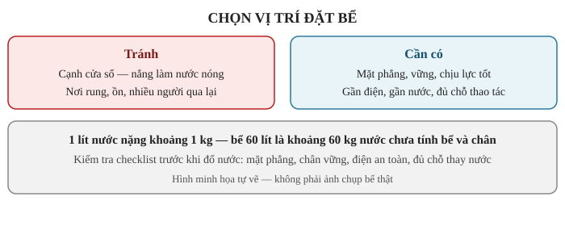

Chọn vị trí đặt bể và chân bể: ánh sáng, mặt phẳng chịu lực, điện, nước và sự yên tĩnh
Tác giả: Ruler
Vị trí đặt bể là quyết định bạn chỉ được làm đúng một lần duy nhất một cách dễ dàng: trước khi đổ nước vào. Một bể đã đầy nước nặng gấp nhiều lần lúc còn trống, và di chuyển bể đang đầy nước có thể làm nứt kính, bung keo dán, hoặc làm người khiêng bị thương. Vì vậy thứ tự đúng là chọn chỗ trước, đặt chân đế và bể lên, kiểm tra mặt phẳng và điện nước, rồi mới đổ nước và chạy lọc theo Cách xử lý nước mới trước khi thả cá.
Chọn bể cá đầu tiên: kích thước, lọc, đèn và nền đã nhắc ngắn về vị trí: tránh ánh nắng trực tiếp và nguồn nhiệt, đặt bể trên mặt phẳng chắc chắn. Bài này đi sâu vào từng yếu tố mà Chọn bể cá đầu tiên: kích thước, lọc, đèn và nền chưa phân tích hết: bể của bạn nặng bao nhiêu, sàn nhà có chịu được không, chân đế nào mới đủ chắc, mặt phẳng phải phẳng tới mức nào, điện đặt ra sao cho an toàn, nước lấy ở đâu và đổ đi đâu, và nhà có trẻ nhỏ hay vật nuôi thì cần tránh những gì. Bài này không viết lại chu trình nitơ đầy đủ, vì chu trình đó đã được giải thích ở Cách xử lý nước mới trước khi thả cá. Bài này chỉ dùng một kết quả của chu trình đó: vi khuẩn trong lọc cần nhiệt độ ổn định và nước ổn định, mà hai thứ đó phụ thuộc rất nhiều vào vị trí đặt bể.
1. Tính trọng lượng trước khi chọn chỗ: bể đầy nước nặng hơn bạn tưởng rất nhiều

Người mới thường chỉ nghĩ tới giá bể và giá cá, mà quên tính cân nặng. Nước là thứ nặng nhất trong bể. WaterZoo, một cửa hàng thủy sinh ở Anh, viết mỗi lít nước nặng 1 kg, và lấy ví dụ một bể 36×18×12 inch (khoảng 91×46×30 cm) khi đổ đầy nước và sỏi sẽ nặng hơn 150 kg. Con số đó chỉ tính nước và sỏi, chưa tính kính bể, chân đế và đồ trang trí. Bài chọn bể của website này cũng đã dùng cùng một quy đổi: một lít nước nặng khoảng một kg, và bể 60 lít khi đầy nước có thể nặng hơn 60 kg.
FishTankWorld, một trang hướng dẫn nuôi cá cảnh, đưa ra các mốc tương tự bằng đơn vị gallon của Mỹ. Theo trang này, một bể 5 gallon (khoảng 19 lít) khi đầy nặng khoảng 50 pound (khoảng 23 kg) tính cả nền và đồ trang trí. Bể 20 gallon (khoảng 76 lít) nặng gần 200 pound (khoảng 91 kg). Bể 55 gallon (khoảng 208 lít) nặng hơn 550 pound (khoảng 250 kg). Bể 100 gallon (khoảng 379 lít) nặng gần 1.000 pound (khoảng 454 kg). Các con số pound ở đây là số của FishTankWorld; các con số kg trong ngoặc là phép quy đổi (1 pound khoảng 0,45 kg), không phải số gốc của trang đó.
Bảng dưới đây tóm tắt các mốc trên thành lựa chọn thực tế cho người mới ở Việt Nam, dùng bể tính bằng lít như 10 loại cá cảnh dễ nuôi nhất cho người mới và bài chọn bể đã dùng. Trọng lượng trong bảng là ước lượng từ quy đổi 1 lít nước nặng khoảng 1 kg, cộng thêm kính, nền và đồ trang trí, vì vậy hãy coi đó là mức tối thiểu, không phải mức chính xác cho bể của bạn.
| Cỡ bể | Thể tích nước khoảng | Trọng lượng ước lượng khi đầy | Cần lưu ý về sàn và chân đế |
|---|---|---|---|
| Bể nhỏ khoảng 40 lít | 40 lít | Hơn 40 kg | Bàn chắc và chân đế chuyên dụng đều được, nhưng đừng đặt lên bàn yếu hay kệ mỏng |
| Bể vừa khoảng 54–60 lít | 54–60 lít | Hơn 60 kg | Chân đế chuyên dụng là lựa chọn an toàn nhất; kiểm tra mặt phẳng bằng thước thủy |
| Bể khoảng 100 lít | 100 lít | Khoảng 130–150 kg | Nên đặt ở tầng trệt hoặc sát tường chịu lực; hỏi ý kiến người có chuyên môn nếu nhà bạn là sàn gỗ cũ |
| Bể từ 200 lít trở lên | 200 lít trở lên | Hơn 250 kg | Đây không còn là bể cho người mới; cần tính toán sàn nhà và chân đế riêng trước khi mua |
FishTankWorld viết sàn nhà ở thông thường chịu được hầu hết các bể tới 55 gallon (khoảng 208 lít), nhưng bể lớn hơn 75 gallon (khoảng 284 lít) đặt ở tầng trên có thể vượt quá khả năng chịu lực của sàn, nhất là ở nhà cũ. Trang này khuyên hỏi ý kiến kỹ sư kết cấu trước khi đặt bể lớn hơn 75 gallon ở tầng trên hoặc ở nhà cũ không rõ kết cấu sàn. Lời khuyên đó nghe có vẻ xa vời với người mới chỉ nuôi bể 60 lít, nhưng nó nhắc một nguyên tắc đúng cho mọi cỡ bể: trọng lượng của bể dồn lên một diện tích nhỏ, vì vậy hãy nghĩ tới sàn nhà trước khi nghĩ tới chuyện ngắm cá.
Về vị trí trên sàn, WaterZoo viết tủ hoặc chân đế đỡ bể nên đặt ngang qua các thanh dầm sàn (floor joists) để trọng lượng phân bố đều, và nếu bạn không chắc sàn nhà có chịu được bể hay không thì hãy hỏi kỹ sư kết cấu. Sàn bê tông ở tầng trệt là lựa chọn chắc chắn nhất. Nếu nhà bạn là sàn gỗ treo, hãy đặt bể sát tường chịu lực thay vì đặt giữa phòng, vì tường chịu lực là nơi sàn được đỡ tốt nhất. Bài này không đưa ra con số chịu lực cụ thể cho từng loại sàn ở Việt Nam, vì mỗi nhà xây khác nhau; nếu bạn nuôi bể lớn và không chắc về sàn, hãy hỏi người có chuyên môn về kết cấu thay vì đoán.
2. Mặt phẳng và chân đế: phải phẳng, phải chắc, và phải là đồ làm ra để đỡ bể
Bể cá phải đặt trên mặt phẳng hoàn toàn. WaterZoo viết điều này rất dứt khoát: bạn phải đặt bể trên mặt phẳng, nơi bể khó bị va đập, và dù bạn đặt bể trên chân đế chuyên dụng thì vẫn phải kiểm tra bằng thước thủy trước khi đặt bể lên và đổ nước. FishTankWorld giải thích vì sao: bể không phẳng sẽ tạo áp lực không đều lên các mối keo silicon, làm mối keo yếu dần và gây rò rỉ theo thời gian. Trang này dặn luôn cân bằng chân đế bằng cách chêm dưới chân đế, không bao giờ chêm trực tiếp dưới kính bể, vì kính chịu áp lực không đều có thể nứt hoặc tách khỏi keo dán.
Có hai chi tiết về đáy bể mà người mới hay bỏ qua. Thứ nhất, WaterZoo viết bể không có đáy nổi (floating base) nên có một lớp xốp polystyrene hoặc tấm lót đáy bể đặt bên dưới để làm đệm. Lớp đệm này chỉ bù được những lệch nhỏ, không thay thế được mặt phẳng. Thứ hai, bể có đáy nổi — tức là đáy bể hơi cao hơn các cạnh bên, bể chỉ được đỡ quanh mép, ví dụ một số bể của hãng Juwel — thì không được đặt lên bất kỳ vật liệu đệm nào, dù vẫn phải đặt trên mặt phẳng đủ chắc. Nếu bạn không biết bể mình thuộc loại nào, hãy hỏi cửa hàng bán bể trước khi mua tấm lót, vì đặt sai loại đệm cũng có thể làm bể chịu lực sai cách.
Chân đế chuyên dụng cho bể cá là lựa chọn an toàn nhất. FishTankWorld viết chân đế chuyên dụng phân bố trọng lượng đều và đặt bể ở độ cao vừa tầm ngắm. Chân đế khung kim loại với các mối hàn chịu tải nặng đáng tin cậy, còn chân đế gỗ cứng chắc vừa chịu lực vừa đẹp. Ngược lại, đồ nội thất thông thường trong nhà không được thiết kế để chịu tải nặng liên tục. FishTankWorld lấy ví dụ trong mục hỏi đáp của mình: hầu hết tủ quần áo không đỡ được trọng lượng bể an toàn; một bể 10 gallon (khoảng 38 lít) khi đầy nặng khoảng 100 pound (khoảng 45 kg) tính cả nền và đồ trang trí, mà đồ nội thất phòng ngủ thông thường không được thiết kế cho tải nặng kéo dài như vậy. Đồ nội thất trẻ em còn có thêm nguy cơ lật đổ. Vì vậy đừng đặt bể lên tủ quần áo, bàn học hay kệ tivi chỉ vì nó vừa kích thước. Hãy dùng chân đế chuyên dụng có ghi rõ chịu được cỡ bể của bạn, hoặc mặt bàn được làm ra để chịu tải nặng và đã kiểm tra mặt phẳng bằng thước thủy.
Một lỗi nữa là đặt bể trực tiếp xuống sàn nhà. Bể đặt sát sàn dễ bị đá trúng khi người đi qua, dễ bị bụi bẩn rơi vào, và bạn sẽ phải cúi sát đất mỗi lần thay nước hay vệ sinh lọc. FishTankWorld không khuyến nghị đặt bể ở mặt sàn; bài này cũng khuyên bạn đặt bể lên chân đế ở độ cao vừa tầm nhìn khi ngồi, vừa dễ thao tác khi thay nước, vừa tránh va chạm ở tầm chân.
3. Ánh nắng và cửa sổ: hai nguồn không đồng ý hoàn toàn, và bạn nên nghe theo nguồn thận trọng hơn
Về cửa sổ, hai nguồn trong bài này không nói giống hệt nhau, và bài này ghi rõ sự khác nhau đó. RSPCA viết đừng đặt bể cạnh cửa sổ, vì ánh nắng có thể làm nhiệt độ nước tăng lên tới mức nguy hiểm. Trang này cũng viết đừng đặt bể gần nguồn nhiệt như ánh nắng trực tiếp và lò sưởi. Đó là lời khuyên dứt khoát và dễ làm theo nhất cho người mới.
FishTankWorld thì mềm mỏng hơn. Trang này viết lời khuyên cũ là tránh đặt bể gần cửa sổ, nhưng nhà hiện đại có điều hòa nhiệt độ thì xử lý vị trí cửa sổ tốt hơn lời khuyên truyền thống. Hai mối lo chính mà trang này nêu là ánh nắng trực tiếp làm nóng nước và thúc đẩy rêu tảo, và nhiệt độ ngày đêm thay đổi vì nắng làm nóng ban ngày rồi lạnh đi vào ban đêm. Trang này viết người nuôi muốn đặt bể gần cửa sổ nên dùng rèm hoặc mành để kiểm soát ánh sáng trực tiếp, và theo dõi nhiệt độ nước vào giờ nắng gắt buổi chiều. Nhiều người nuôi vẫn giữ bể khỏe mạnh gần cửa sổ khi làm như vậy.
Bài này khuyên người mới làm theo RSPCA: đừng đặt bể cạnh cửa sổ. Lý do là người mới chưa có thói quen đo nhiệt độ mỗi ngày, chưa biết rèm nào che được bao nhiêu nắng, và chưa phân biệt được nắng trực tiếp với ánh sáng khuếch tán qua cửa sổ. Khi bạn đã nuôi ổn định một thời gian, đo nước thành thạo và hiểu rõ hướng nắng của nhà mình, bạn mới nên thử vị trí gần cửa sổ với rèm che và nhiệt kế theo dõi. Nếu nhà bạn chỉ còn chỗ cạnh cửa sổ, hãy làm đúng như FishTankWorld viết: dùng rèm che nắng trực tiếp, đặt bể vuông góc với cửa sổ thay vì đối diện cửa sổ, và đo nhiệt độ nước vào buổi chiều nắng gắt trong những tuần đầu. Đừng đặt bể trong nhà kính hay phòng nhiều nắng (conservatory), vì WaterZoo viết rõ vị trí đó gây ra vấn đề nhiệt độ dao động và rêu tảo phát triển quá mức.
Về rêu tảo, ánh nắng trực tiếp là một trong những nguyên nhân làm rêu tảo bùng phát nhanh nhất. FishTankWorld viết ánh nắng trực tiếp làm nóng nước và thúc đẩy rêu tảo mọc trên kính, đồ trang trí và nền. Chọn đèn và cây thủy sinh dễ sống cho bể mới: bắt đầu ít, tăng dần của website này đã viết đèn bể chỉ nên bật 8–10 giờ mỗi ngày; ánh nắng cộng thêm giờ đèn sẽ làm tổng thời gian sáng vượt xa mức đó. Nếu bể của bạn đã có rêu tảo nhiều, hãy xem lại vị trí đặt bể trước khi mua thuốc diệt rêu, vì thuốc không sửa được nguyên nhân là nắng.
4. Nguồn nóng, nguồn lạnh và gió lùa: nhiệt độ ổn định quan trọng hơn nhiệt độ đúng
Cá nhiệt đới cần nước ấm ổn định, và sưởi trong bể chỉ làm được một nửa việc. FishTankWorld viết sưởi bù được nhiệt độ phòng lạnh, nhưng không chống lại được những thay đổi lớn do thiết bị sưởi hay điều hòa bật tắt liên tục. Trang này liệt kê những vị trí gây ra vấn đề nhiệt độ: ngay trước cửa gió nóng hay lò sưởi, gần cửa gió điều hòa thổi trực tiếp vào bể, cạnh bếp củi hay máy sưởi độc lập, sát tường ngoài cách nhiệt kém, trong tầng hầm hay nhà để xe không có sưởi (đối với cá nhiệt đới), và dưới ánh nắng trực tiếp kéo dài. RSPCA cũng viết đừng đặt bể gần lò sưởi hay nguồn nhiệt.
Nhiệt độ phòng ổn định mà FishTankWorld nêu làm mốc là 68–76°F, tức khoảng 20–24°C (phép quy đổi: 68°F bằng 20°C, 76°F khoảng 24°C). Đó là nhiệt độ phòng, không phải nhiệt độ nước trong bể; nước trong bể sẽ do sưởi giữ theo loài cá bạn nuôi, như bài chọn bể đã viết. Điều quan trọng là phòng không quá lạnh vào ban đêm và không quá nóng vào buổi trưa, để sưởi không phải làm việc quá sức và nước không dao động mạnh.
Gió lùa cũng là một dạng thay đổi nhiệt độ mà người mới hay bỏ qua. Cửa ra vào mở ra đóng vào, cửa sổ mở đón gió, quạt thổi thẳng vào bể đều làm mặt nước bay hơi nhanh hơn và nhiệt độ nước thay đổi nhanh hơn. Đừng đặt bể ngay cạnh cửa chính hay lối đi có gió lùa mạnh, và đừng đặt bể dưới cửa gió điều hòa thổi thẳng xuống.
5. Điện an toàn: tính trước số ổ cắm, làm vòng dây nhỏ giọt, không dùng dây nối dài
Một bể cá nước ngọt thông thường cần ít nhất ba ổ cắm điện: một cho lọc, một cho sưởi và một cho đèn. FishTankWorld viết nhiều bể còn cần thêm máy sủi khí, ổ cắm hẹn giờ và máy sủi dự phòng chạy pin. Vì vậy hãy đếm số thiết bị của bạn trước khi chọn vị trí, rồi mới chọn chỗ có đủ ổ cắm trong tầm với của dây điện.
FishTankWorld đưa ra danh sách kiểm tra về điện mà người mới nên làm theo từng mục: ít nhất 3 ổ cắm có sẵn trong tầm với của dây (không dùng dây nối dài), ổ cắm có chống giật GFCI ở gần nguồn nước, ổ cắm điện đặt cao hơn mặt sàn để tránh tiếp xúc với nước tràn, làm vòng dây nhỏ giọt (drip loop) cho mọi dây điện chạy từ bể tới ổ cắm, ổ cắm đặt xa vùng nước bắn trực tiếp, và còn dư chỗ cho thiết bị thêm sau này. Vòng dây nhỏ giọt là đoạn dây điện võng xuống thấp hơn ổ cắm trước khi đi lên ổ cắm, để nước chảy dọc theo dây sẽ nhỏ xuống ở điểm thấp nhất thay vì chảy vào ổ cắm. WaterZoo cũng viết ổ cắm điện nên ở gần và dễ tiếp cận, và nhớ làm vòng dây nhỏ giọt để nước không chạy dọc dây điện vào ổ cắm.
Đừng đặt bể ở nơi dây điện phải vắt qua lối đi, và đừng dùng dây nối dài cho thiết bị bể cá. Dây nối dài đặt trên sàn dễ bị giẫm lên, bị nước tràn vào, và làm tăng nguy cơ chập điện. Nếu vị trí bạn thích không có đủ ổ cắm, hãy nhờ thợ điện lắp thêm ổ cắm có chống giật GFCI gần đó trước khi đặt bể, thay vì kéo dây nối dài từ phòng khác. Đây là việc của thợ điện, không phải việc bạn tự làm nếu bạn không có chuyên môn về điện.
6. Nước và thoát nước: bể càng gần vòi nước thì bạn càng chăm bể đều hơn
Thay nước là việc làm hằng tuần, vì vậy khoảng cách từ bể tới vòi nước quyết định bạn có chăm bể đều hay không. FishTankWorld viết bể càng gần vòi nước hay chậu rửa thì việc thay nước càng đỡ vất vả. Trang này khuyên chọn vị trí có đường đi rõ ràng để xách xô hoặc kéo ống dẫn nước, không có cầu thang, góc hẹp hay thảm trải sàn trên đường đi. Bạn cũng cần cả nước nóng và nước lạnh để pha nước mới đúng nhiệt độ với nước trong bể, như Thay nước cho bể cá đúng cách: bao nhiêu, bao lâu và lỗi thường gặp đã viết.
Nước cũ sau khi thay cũng cần chỗ đổ đi. FishTankWorld liệt kê các lựa chọn: chậu rửa bếp hay phòng tắm, chậu rửa phòng giặt có lòng chậu sâu và thoát nước trực tiếp, bồn cầu cho lần thay nước nhỏ mà không cần nhấc xô lên cao, cống thoát nước hay chậu rửa đa năng ở tầng hầm, và tưới cây ngoài vườn vì nước bể giàu dinh dưỡng làm phân bón tự nhiên cho cây. Trang này cũng viết ống dẫn nước chuyên dụng (hệ thống thay nước bằng ống nối vòi) giúp xả nước thẳng vào chậu rửa mà không cần xách xô. Bài này không khuyên bạn đổ nước bể vào chậu rửa bát đang dùng nấu ăn nếu người nhà không đồng ý; hãy chọn chỗ đổ nước mà cả nhà đều chấp nhận, và ghi rõ vào lịch chăm sóc của bạn.
Một điểm thực tế nữa: hãy để sẵn chỗ cho xô nước, ống hút nước và khăn lau gần bể, nhưng không để chúng chắn lối đi. Nếu bạn phải đi qua cả nhà để lấy xô mỗi lần thay nước, bạn sẽ thay nước ít dần theo thời gian, và nước bể sẽ xấu đi mà bạn không để ý. Vị trí đặt bể tốt là vị trí mà việc thay nước chỉ mất vài phút chuẩn bị, không phải dọn dẹp cả phòng khách.
7. Giao thông, rung động, trẻ nhỏ và vật nuôi: bể cần yên tĩnh hơn bạn tưởng
Bể cá là khối kính chứa nước nặng, đặt ở nơi người qua lại nhiều thì nguy cơ va chạm rất cao. FishTankWorld liệt kê những mối nguy thường gặp: máy hút bụi va vào kính bể hay chân đế, đồ chơi trẻ em và trẻ chạy nhảy trong nhà, vật nuôi nhảy lên đồ đạc gần bể hay cọ vào bể, cửa ra vào mở đập vào chân đế hay gây rung động, chổi và cây lau nhà quệt vào bể. Trang này cũng viết cá ở nơi qua lại nhiều sẽ trốn nhiều hơn, ăn kém hơn, màu nhạt đi và hệ miễn dịch yếu hơn. Vì vậy hãy đặt bể xa hành lang chính, cửa ra vào và khu vực chơi của trẻ em, nhưng vẫn nhìn thấy và tiếp cận được để chăm sóc. Phòng khách, góc phòng làm việc hay hốc tường trong phòng ngủ thường là sự cân bằng tốt giữa nhìn thấy và an toàn.
Tiếng ồn và rung động cũng làm cá stress, dù bạn không nhìn thấy ngay. WaterZoo viết hãy đặt bể xa nguồn tiếng ồn như loa hay tivi, vì những yếu tố đó ảnh hưởng xấu tới môi trường sống của cá. Trẻ nhỏ gõ vào kính bể, loa đặt sát bể, hay máy giặt rung mạnh ở phòng bên cạnh đều là những thứ bạn nên tránh khi chọn vị trí. Nếu nhà bạn có trẻ nhỏ, hãy đặt bể ở độ cao mà trẻ không với tới để gõ kính, và dạy trẻ chỉ ngắm cá mà không gõ vào bể. Nếu nhà bạn nuôi chó hay mèo, đừng đặt bể ở nơi vật nuôi hay nhảy lên, và luôn có nắp bể chắc chắn để vật nuôi không thò chân vào nước hay làm rơi đồ vào bể.
Đừng đặt bể gần thiết bị điện tử khác như máy tính, vì WaterZoo viết nước bắn ra khi chăm sóc bể có thể làm hỏng máy tính. Đặt bể xa máy tính cũng giúp bạn tránh được tình huống nước tràn làm hỏng đồ điện tử đắt tiền trong nhà.
8. Khoảng trống thao tác: chừa chỗ trên, sau và hai bên bể
Người mới thường đo vừa khít chỗ đặt bể mà quên chừa chỗ để làm việc. WaterZoo viết hãy chừa ít nhất 30 cm phía trên bể để thao tác dễ dàng, và ít nhất 5 cm phía sau cho ống dẫn và dây điện. FishTankWorld cũng viết cần có không gian phía sau và hai bên bể để tiếp cận thiết bị. Những khoảng trống này để bạn mở nắp bể, tháo lắp lọc treo, vệ sinh ống hút, và luồn dây điện mà không phải kéo bể ra khỏi tường mỗi lần.
Hãy thử tưởng tượng một lần thay nước và vệ sinh lọc trước khi quyết định vị trí cuối cùng. Bạn có mở được nắp bể hết cỡ không, hay nắp bị kẹt vào kệ phía trên? Bạn có với tay tới đáy bể để hút cặn không, hay bể quá cao so với tầm với của bạn? Bạn có tháo được lọc treo ra phía sau không, hay lọc bị kẹt giữa bể và tường? Bạn có chỗ đặt xô nước đã hút ra không, hay xô phải để giữa lối đi? Nếu câu trả lời cho bất kỳ câu nào là không, hãy đổi vị trí hoặc đổi chân đế trước khi đổ nước vào, vì sửa những thứ này sau khi bể đã đầy nước sẽ khó hơn rất nhiều.
9. Vị trí ngắm và phòng nào hợp: ngắm là việc cuối cùng, không phải việc đầu tiên
FishTankWorld xếp việc ngắm bể ở vị trí cuối cùng trong bảy yếu tố đặt bể, vì vị trí ngắm đẹp nhất chưa chắc đã là vị trí tốt nhất cho bể. An toàn và dễ chăm sóc phải được ưu tiên trước, rồi mới chọn vị trí ngắm tốt nhất trong những vị trí còn lại. Trang này viết phòng khách cho cả gia đình và khách cùng ngắm bể, phòng làm việc hay phòng ngủ tạo không gian thư giãn riêng, và phòng nuôi cá riêng thì ưu tiên dễ chăm sóc hơn là ngắm, phù hợp với người nuôi nhiều bể.
Bài này đồng ý với thứ tự đó. Người mới hay chọn vị trí ngắm đẹp nhất trong nhà rồi mới nghĩ tới điện, nước và ánh nắng, và sau đó phải sống chung với những vấn đề mà vị trí đó gây ra. Hãy làm ngược lại: loại bỏ trước những vị trí không an toàn (gần cửa sổ nắng gắt, gần lò sưởi, trên bàn yếu, giữa lối đi), loại tiếp những vị trí chăm sóc khó (xa vòi nước, không đủ ổ cắm, không có chỗ thao tác), rồi trong những vị trí còn lại hãy chọn chỗ bạn ngắm cá thoải mái nhất khi ngồi. Bể đặt ở vị trí bạn nhìn thấy mỗi ngày sẽ được chăm sóc tốt hơn bể đặt ở góc khuất mà bạn quên mất, vì vậy ngắm vẫn quan trọng, chỉ là nó đứng sau an toàn và chăm sóc.
Về phòng nào hợp, bài này chỉ viết những gì các nguồn đã mở có nói. FishTankWorld viết tầng hầm hay nhà để xe không có sưởi không hợp với cá nhiệt đới, vì nhiệt độ ở đó thay đổi nhiều và quá lạnh vào mùa lạnh. Phòng bếp và phòng tắm có hơi ẩm và hóa chất tẩy rửa trong không khí, vì vậy nếu bạn đặt bể ở đó thì cần tránh xa nơi xịt hóa chất và nấu ăn nhiều khói. Phòng khách và phòng làm việc thường là lựa chọn cân bằng nhất cho người mới: nhiệt độ ổn định, ít hóa chất, dễ ngắm và dễ chăm sóc.
10. Checklist trước khi đổ nước: kiểm tra xong rồi mới đổ
Danh sách dưới đây tổng hợp từ danh sách kiểm tra của FishTankWorld và các hướng dẫn của RSPCA và WaterZoo. Hãy tick từng mục trước khi đổ nước vào bể, vì sau khi đổ nước thì sửa bất kỳ mục nào cũng khó hơn rất nhiều.
- Chân đế chuyên dụng, chịu được tổng trọng lượng bể khi đầy nước, nền, kính và đồ trang trí.
- Sàn nhà chịu được tải trọng tập trung, nhất là ở tầng trên; bể lớn thì hỏi ý kiến người có chuyên môn về kết cấu.
- Chân đế đặt phẳng hoàn toàn, đã kiểm tra bằng thước thủy; chêm dưới chân đế nếu cần, không chêm dưới kính bể.
- Có ít nhất 3 ổ cắm chống giật GFCI trong tầm với của dây điện, không dùng dây nối dài.
- Mọi dây điện đều có vòng dây nhỏ giọt, ổ cắm đặt cao hơn mặt sàn và xa vùng nước bắn.
- Không có cửa gió nóng, lò sưởi, cửa gió điều hòa hay bếp củi thổi thẳng vào bể.
- Không có ánh nắng trực tiếp chiếu vào bể; nếu gần cửa sổ thì có rèm che và nhiệt kế theo dõi.
- Vòi nước ở gần, có cả nước nóng và nước lạnh, đường đi xách xô không có cầu thang hay góc hẹp.
- Có chỗ đổ nước cũ: chậu rửa, bồn cầu, cống thoát nước hay tưới cây ngoài vườn.
- Xa lối đi chính, cửa ra vào, khu vực chơi của trẻ em và chỗ vật nuôi hay nhảy lên.
- Chừa ít nhất 30 cm phía trên bể và ít nhất 5 cm phía sau cho ống dẫn và dây điện.
- Nắp bể chắc chắn, cá không nhảy ra ngoài được và vật nuôi không thò chân vào được.
Sau khi tick hết danh sách, hãy đặt bể lên chân đế, kiểm tra lại mặt phẳng một lần nữa, rồi mới đổ nước và chạy lọc theo bài xử lý nước. Nếu bạn phát hiện một mục chưa đạt sau khi đã đổ nước, hãy hút nước ra và sửa ngay, đừng để bể đầy nước rồi mới sửa, vì bể đầy nước nặng hơn rất nhiều và khó di chuyển an toàn.
11. Bảy lỗi người mới hay mắc nhất khi chọn vị trí
Lỗi thứ nhất là đặt bể lên bàn hay tủ không phải đồ đỡ bể. Bàn làm việc, tủ quần áo hay kệ tivi có thể chịu được bể lúc mới đặt lên, nhưng tải nặng liên tục trong nhiều tháng có thể làm bàn võng xuống, và bể sẽ không còn phẳng nữa. Hãy dùng chân đế chuyên dụng có ghi rõ chịu được cỡ bể của bạn.
Lỗi thứ hai là đặt bể cạnh cửa sổ vì muốn ngắm cá dưới ánh sáng tự nhiên. Ánh nắng trực tiếp làm nước nóng lên nhanh và rêu tảo bùng phát, mà người mới thường đổ lỗi cho lọc hay thức ăn thay vì nhìn lại vị trí đặt bể. Hãy đặt bể xa cửa sổ, hoặc che rèm và đo nhiệt độ nước vào buổi chiều nắng gắt.
Lỗi thứ ba là quên tính trọng lượng và đặt bể lớn ở tầng trên mà không hỏi ai. Bể 60 lít thì hầu hết sàn nhà đều chịu được, nhưng bể lớn hơn thì không phải lúc nào cũng vậy. Hãy hỏi ý kiến người có chuyên môn về kết cấu trước khi đặt bể lớn ở tầng trên hay nhà cũ.
Lỗi thứ tư là chêm dưới kính bể thay vì chêm dưới chân đế. Chêm dưới kính làm kính chịu áp lực không đều và có thể nứt hoặc tách keo. Hãy cân bằng chân đế trước, rồi mới đặt bể lên.
Lỗi thứ năm là không chừa chỗ thao tác phía trên và phía sau bể. Bể đặt sát trần kệ hay sát tường sẽ làm bạn không mở được nắp, không tháo được lọc treo, và mỗi lần vệ sinh lọc đều phải kéo bể ra. Hãy chừa ít nhất 30 cm phía trên và 5 cm phía sau như WaterZoo viết.
Lỗi thứ sáu là dùng dây nối dài cho thiết bị bể cá. Dây nối dài trên sàn dễ bị giẫm lên và dính nước, mà nước và điện là hai thứ không được gặp nhau. Hãy lắp thêm ổ cắm chống giật GFCI gần bể trước khi đặt bể, thay vì kéo dây nối dài từ phòng khác.
Lỗi thứ bảy là đặt bể giữa lối đi hay khu vực trẻ em chơi đùa. Bể ở đó dễ bị va đập, cá thì stress vì người qua lại liên tục. Hãy đặt bể ở nơi yên tĩnh nhưng vẫn nhìn thấy mỗi ngày, xa hành lang chính và cửa ra vào.
Kết luận
Chọn vị trí đặt bể không phải là chọn chỗ đẹp nhất trong nhà, mà là chọn chỗ an toàn nhất trong những chỗ bạn có thể chăm sóc đều đặn. Hãy tính trọng lượng trước, chọn chân đế chuyên dụng, kiểm tra mặt phẳng bằng thước thủy, tránh ánh nắng trực tiếp và nguồn nóng lạnh, tính trước số ổ cắm và làm vòng dây nhỏ giọt, đặt bể gần vòi nước và chỗ đổ nước cũ, xa lối đi và tiếng ồn, và chừa đủ chỗ thao tác phía trên và phía sau bể. Khi vị trí đã đúng, những việc sau đó — chạy lọc theo bài xử lý nước, chọn cá theo 10 loại cá cảnh dễ nuôi nhất cho người mới, cho ăn theo Cho cá cảnh ăn đúng cách: bao nhiêu, mấy lần và lỗi thường gặp, thay nước theo Thay nước cho bể cá đúng cách: bao nhiêu, bao lâu và lỗi thường gặp — đều sẽ dễ hơn rất nhiều, vì bể của bạn đã có một nền tảng ổn định ngay từ đầu.
Nguồn tham khảo
- RSPCA, "Choosing an Aquarium for Pet Fish" — không đặt bể gần nguồn nhiệt như ánh nắng trực tiếp và lò sưởi, đặt bể trên bề mặt chắc chắn, bể có thể nặng bất ngờ khi đầy nước; khói thuốc lá hay thuốc xịt trong không khí có thể độc với cá, nắp bể giúp ngăn một phần ô nhiễm; đừng đặt bể cạnh cửa sổ vì ánh nắng có thể làm nhiệt độ nước tăng lên tới mức nguy hiểm; đèn 8–10 giờ mỗi ngày (truy cập 23/11/2026): https://science.rspca.org.uk/en/web/rspca/adviceandwelfare/pets/fish/environment
- FishTankWorld, "Where to Place Your Fish Tank: 7 Essential Placement Tips" — nước nặng khoảng 9 pound mỗi gallon; bể 5 gallon nặng khoảng 50 pound, bể 20 gallon gần 200 pound, bể 55 gallon hơn 550 pound, bể 100 gallon gần 1.000 pound; sàn nhà thông thường chịu được bể tới 55 gallon, bể lớn hơn 75 gallon ở tầng trên nên hỏi kỹ sư kết cấu; cân bằng chân đế bằng chêm dưới chân đế, không chêm dưới kính bể; tránh cửa gió nóng, điều hòa, bếp củi, tường ngoài cách nhiệt kém, tầng hầm hay nhà để xe không có sưởi; nhiệt độ phòng 68–76°F làm mốc; ít nhất 3 ổ cắm trong tầm với, không dùng dây nối dài, ổ cắm chống giật GFCI, vòng dây nhỏ giọt; gần vòi nước và chỗ đổ nước cũ; tránh nơi qua lại nhiều, cá ở đó trốn nhiều, ăn kém, màu nhạt và miễn dịch yếu hơn; ngắm bể xếp sau an toàn và chăm sóc (truy cập 23/11/2026): https://www.fishtankworld.com/where-to-place-fish-tank/
- WaterZoo, "Positioning your aquarium" (hướng dẫn PDF, sửa lần cuối tháng 5/2015, tác giả Jason Scott) — đặt bể trên mặt phẳng, kiểm tra bằng thước thủy dù dùng chân đế chuyên dụng; bể không có đáy nổi nên có lớp xốp polystyrene hay tấm lót đáy làm đệm, chỉ bù được lệch nhỏ; bể có đáy nổi (ví dụ Juwel) không được đặt lên vật liệu đệm; tủ đỡ bể nên đặt ngang qua thanh dầm sàn, không chắc sàn chịu được thì hỏi kỹ sư kết cấu; mỗi lít nước nặng 1 kg, bể 36×18×12 inch đổ đầy nước và sỏi nặng hơn 150 kg; không đặt bể nơi có ánh nắng trực tiếp, gần lò sưởi hay nơi ồn ào; chừa ít nhất 30 cm phía trên và ít nhất 5 cm phía sau cho ống dẫn và dây điện; ổ cắm điện ở gần, dễ tiếp cận, làm vòng dây nhỏ giọt (truy cập 23/11/2026): https://www.waterzoo.co.uk/wp-content/uploads/2017/08/2015-Positioning-your-aquarium.pdf